«Бўғимларимдаги бу оғриқ мени ногиронлар аравачасига ўтқазиб қўяй деганди, фақат битта восита ёрдам берди» — Виктор Сомов
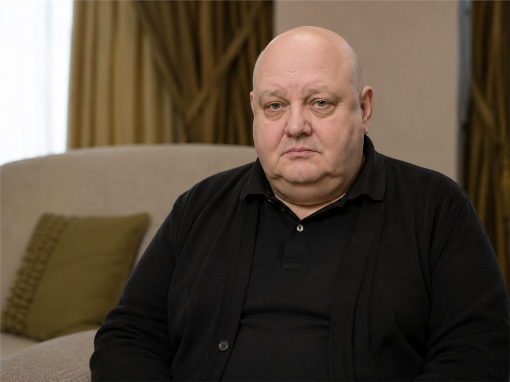
Виктор Сомовнинг мухбиримизга очиқ интервьюси: бўғим оғриғи, ташхис, ногиронлар аравачасида қолиб кетиш қўрқуви ва кутилмаган нажот ҳақида.
Хитларини кўпчилик биладиган тирик афсона — Виктор Сомов йиллар давомида очиқ интервьюлардан қочиб келган. Гўё гитарали бу инсон доим сир бўлиб қоладигандек эди. Аммо бугун, узоқ танаффусдан сўнг, артист илк бор уни ҳақиқатан нима ташвишлантириши ҳақида батафсил гапирди: нафақат ижод, балки артроз билан сокин кураш ва унга ҳаракатчанликни қайтарган восита ҳақида.
- Артрозга қарши ўз вақтида кураш бошланмаса, организмда нима содир бўлади?
- Нега бўғим оғриғига қарши воситалар кўпинча иш бермайди?
- Қайси замонавий восита тоғай тўқимасини тиклашга ёрдам беради?
- Виктор Сомовни артроздан нима қутқарди?
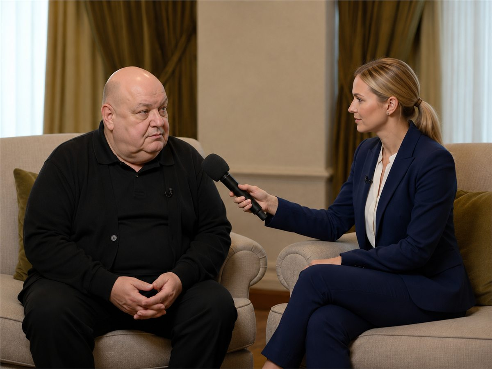
Мухбир: Виктор Алексеевич, ассалому алайкум! Сизни сукутни бузишга нима мажбур қилди?
Виктор Сомов: Ассалому алайкум! Балки, жим юришдан чарчагандирман. Бутун умр мени гоҳ гитарали қувноқ йигит, гоҳ ғамгин якка одам қилиб кўрсатишади. Аслида мен шунчаки чарчаган инсонман.
Мухбир: Бу сўнгги пайтларда матбуотда ёзилаётган гаплар билан боғлиқми? Бўғимларингизда муаммо борлиги ҳақида?
Виктор Сомов: Саҳнага чиқиш — ҳар сафар ўзингни қайта йиғиш дегани. Ёшинг олтмишдан ошганда организм ўзича яшай бошлайди. Бўғимларим тез-тез зирқирайдиган бўлди: гоҳ об-ҳавога, гоҳ ўз-ўзидан. Лекин энг қўрқинчлиси — уйғониб, тура олмаслигингни англаш. Оёқлар гўё бетондай.
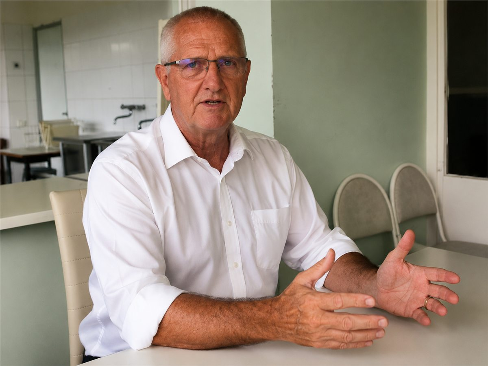
Мухбир: Бу кескин бошландими?
Виктор Сомов: Аста-секин, ҳийлакорона. Тиззада ғирчиллаш — эътибор бермайсан. Зинадан чиққанда оғриқ — юкламага йўясан. Кейин бир пайт келиб, оёқни ёза олмай қоласан. Репетицияларда аллақачон тик тура олмасдим, доим ўтириб олардим.
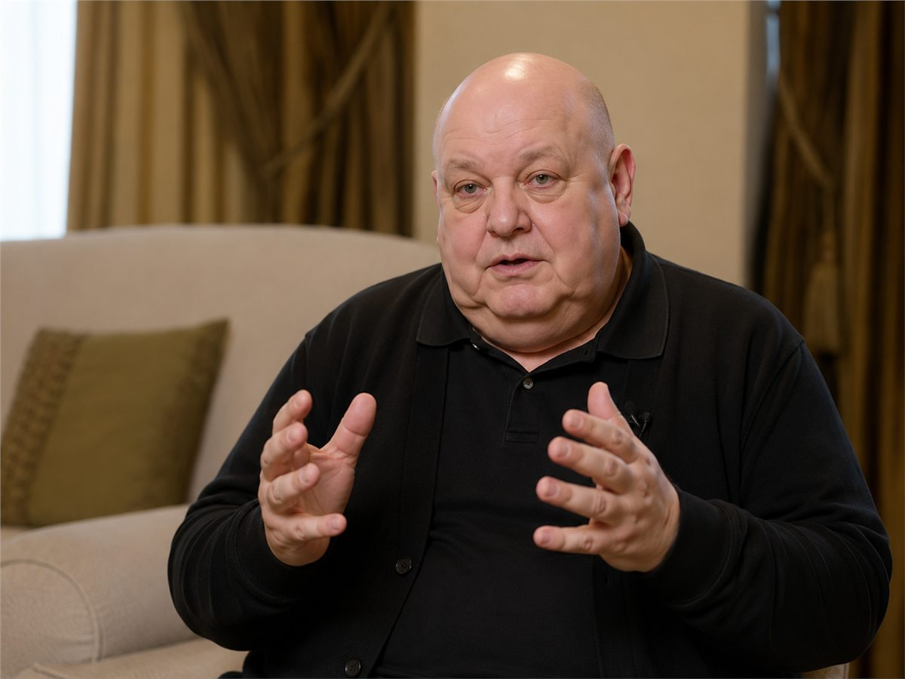
Мухбир: Ва дарҳол мутахассисларга бордингизми?
Виктор Сомов: Йўқ. Чидадим. Эркакча гап: «Ўзи ўтиб кетади». Аммо ундай бўлмади. Бир ҳафтадан кейин машинагача ҳам қийналиб борардим. Зинадан чиқиш — Эльбрусга кўтарилишдек. Кечаси уйғониб: «Тамом, энди доим шундайми?» деб ўйлайсан.
Мухбир: Бу қўрқинчли. Айниқса сизнинг касбингиздаги инсон учун.
Виктор Сомов: Худди шундай! Саҳнада бор кучим билан чиқиш қила олмасдим. Куч йўқ эди. Концерт бекор қилинди. Маъмур залга маэстро бетоблигини эълон қилган пайтдаги ҳиссиётни ҳалигача эслайман.
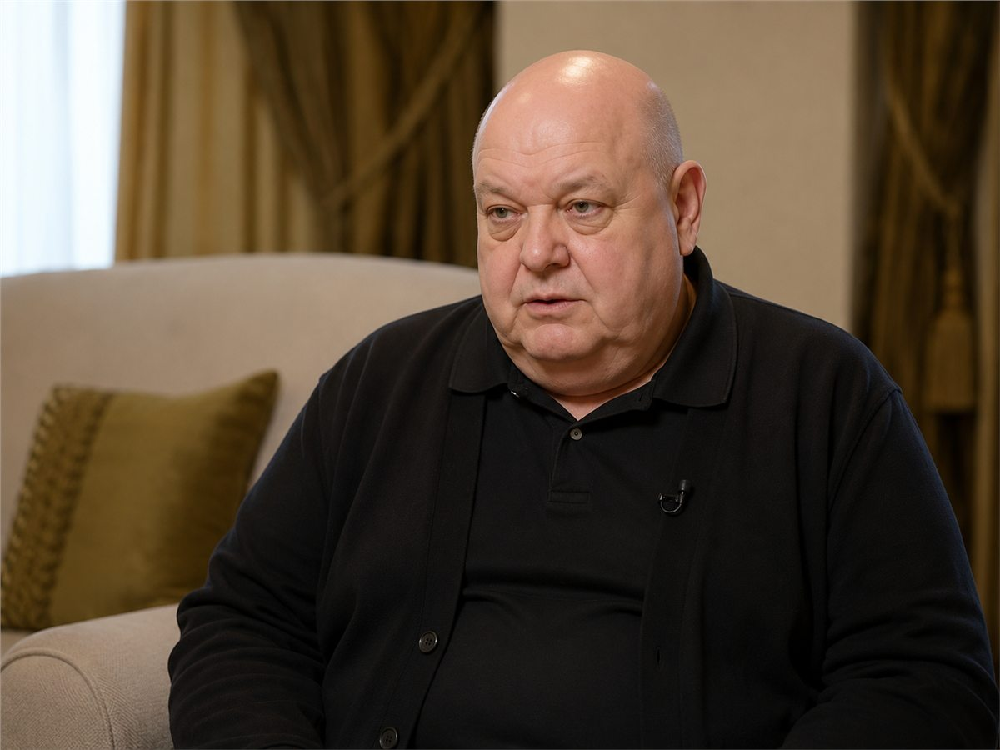
Мухбир: Кейин нима бўлди? Текширувга боришга қарор қилдингизми?
Виктор Сомов: Тез ёрдам келганда қарор қилдим. Кечаси оғриқдан уйғондим — умуман тура олмадим. Шифохонага олиб боришди, суратга туширишди. Шифокор: «Сизда артроз. Ўтиб кетган ҳолат», деди. Ва шундай давом этса, ногиронлар аравачасида қолиш мумкинлигини қўшиб қўйди.
Мухбир: Ногиронлар аравачаси?..
Виктор Сомов: Ҳа. Бўғим емирилаётган, тоғайлар ейилган, яллиғланиш ёш билан қўшилиб кетган. Ётарканман, тушундим: на саҳна, на репетиция, на қўшиқ. Бу шунчаки жисмоний оғриқ эмас, бу касбимнинг оғриғи.
Мухбир: Лекин ҳозир яна фаолсиз. Нимадир ёрдам бердими?
Виктор Сомов: Ҳа. Менинг олдимга мутахассис Дмитрий Иванович Парамонов келди. У суратларни кўриб: «Оғриқни босишни бас қилинг. Бўғимни оғриқсизлантириш эмас, тиклаш керак», деди. Ва менга капсулалар берди. Мунтазам ичишни айтди.
.jpg)
Sustav Pro Max
Кимёвий моддаларсиз, гормонларсиз — экстрактлар ва табиий компонентлар: хитозан, йирик гулли горянка, соя изофлавонлари, кальций ва хондронутриентлар.
Батафсил билишМухбир: Бу қандай восита эди?
Виктор Сомов: У Sustav Pro Max деб аталади. Аввал икки ҳафта, кейин бир ой, шу тарзда аста-секин. Бўғим ҳаракатлана бошлади. Ғирчиллаш йўқолди. Оғриқ кетди. Кейин ҳаракатчанлик ҳам қайтди. Мен яна репетиция қила олдим. Куйлай олдим. Яшай олдим.
Мухбир: Операцияларсизми?
Виктор Сомов: Бирорта ҳам. Ҳолбуки, операцияни деярли тайинлаб қўйишганди. Агар ўша мутахассисни учратмаганимда, ҳозир сиз мен билан ногиронлар аравачасидан туриб гаплашган бўлардинглар.
Мухбир: Нега одамлар азоб чекишда давом этади?
Виктор Сомов: Чунки биз симптомларни тез ва ҳозироқ босишга ўрганганмиз. Бўғимлар эса тумов эмас. Бу ерда сабр ва тўғри курс керак.
- «Sustav Pro Max» рецептсиз берилади.
- Восита табиий, шунинг учун қарши кўрсатмалар одатда ҳомиладорлик, лактация ва компонентларга индивидуал тоқатсизлик билан боғлиқ.
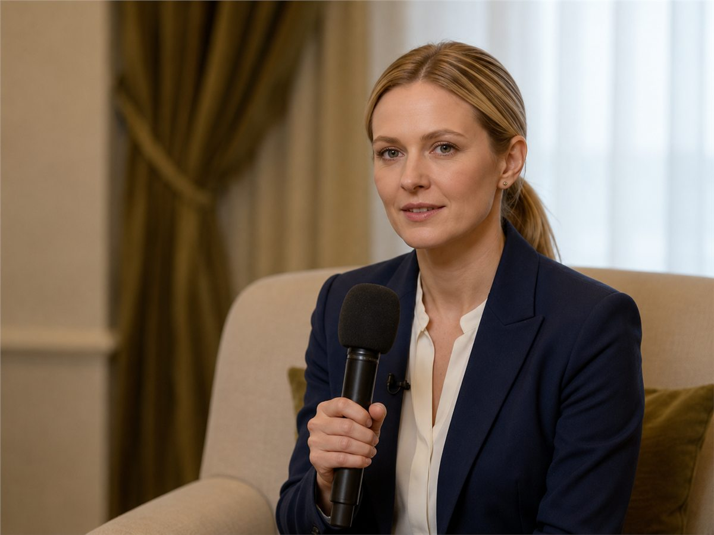
Ҳозир бизнес учун одамларни вақтинчалик ечимларнинг янги порциясига қайтариш муҳим. Бу восита эса ҳар бурчакда реклама қилинмайди. У дорихонада эмас, ишлаб чиқарувчилар ва етказиб берувчилар орқали келади.
Мухбир: Ҳозир аҳволингиз жойидами?
Виктор Сомов: Жойида — руҳан ҳам, жисмонан ҳам. Мен яна ўзимни ўзимдек ҳис қиляпман. Эркак, мусиқачи, инсон сифатида, хароба каби эмас.
Таҳририят қўшимчаси
Таҳририятимиз Виктор Сомовнинг ҳикоясидан ҳайратда қолди ва кўпроқ билишни истади. Биз Виктор Сомовга оёққа туришда ёрдам берган мутахассис Дмитрий Иванович Парамонов билан видео орқали боғландик ва ундан интервью олдик.
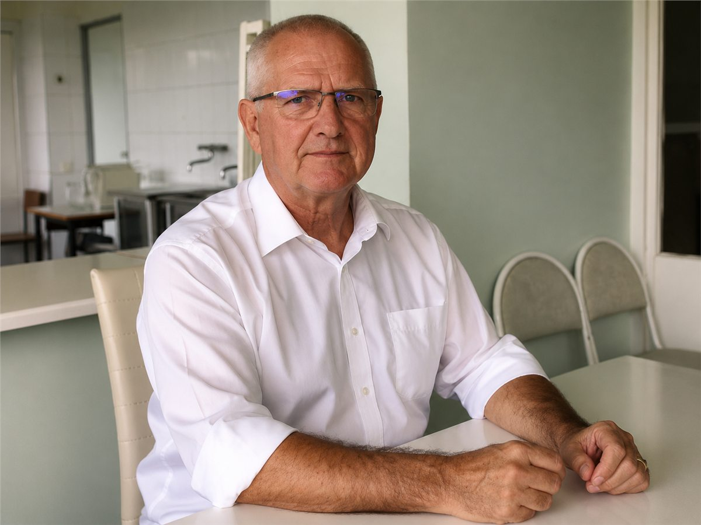
Дмитрий Иванович Парамонов, 30 йилдан ортиқ тажрибага эга мутахассис. Бўғимлар ва тоғайларни тиклаш соҳаси эксперти.
Таҳририят: Дмитрий Иванович, бугун бўғим касалликлари муаммоси қанчалик жиддий?
Дмитрий Парамонов: Аслида, жуда жиддий. Кўплар ҳатто қанчалик эканини тушунмайди. Эрталабки қотишишдан тўлиқ ҳаракатсизликкача бўлган йўл атиги бир-икки йилни олиши мумкин. Оғриқлар доимийлашади, инсон нормал ухлаш, ҳаракат қилиш ва яшаш имкониятини йўқотади.

Таҳририят: Виктор Сомовни айнан сиз тиклаганингиз қандай бўлди?
Дмитрий Парамонов: Биз умумий дўстлар орқали танишдик. Унга ҳақиқатан оғир эди. Турли воситалар курсини кетма-кет ўтар, оғриқ эса қайта-қайта қайтарди. Протезлаш ҳам муҳокама қилинаётганди. Мен келдим, кўрикдан ўтказдим ва тушундим: агар тўғри бошланса, операциясиз ҳаракат қилиб кўриш мумкин.

Таҳририят: Айнан нимани таклиф қилдингиз?
Дмитрий Парамонов: Биз Sustav Pro Max комплекси — бўғимларни озиқлантириш ва қўллаб-қувватлаш учун ишлаб чиқилган табиий восита ёрдамида тикланиш курсини бошладик.
Бу восита шунчаки оғриқни олиб ташламайди, балки бўғимни ичкаридан қўллаб-қувватлашга ёрдам беради. Сири — таркиб ва тўғри танланган шаклда.
Таркибида фақат табиий ингредиентлар
Бўғимлар функционаллигини оширади, тоғайлар емирилишини секинлаштиради, бўғим тўқималари тузилишини яхшилайди.
Тоғайлардаги дегенератив ўзгаришларни тўхтатади, тоғай, мушак ва бўғим тўқималари регенерациясини ишга туширади.
Тоғай тўқимасидаги дегенератив жараёнлар келтириб чиқарган ноқулайликни камайтиради.
Қон айланишини яхшилайди, гиалурон кислотаси ишлаб чиқарилишини рағбатлантиради, яллиғланиш жараёнларини камайтиради.
Эластин ишлаб чиқарилишини рағбатлантиради, суяклар ва тоғайлар учун зарур кальцийни тўлдиради.
Курс давомида қўллаш учун қулай чиқарилиш шакли.
Таҳририят: Уни қандай тўғри қўллаш керак?
Дмитрий Парамонов: Жуда оддий. Капсулаларни кунига 2 марта овқат вақтида ичиш керак. Мунтазамлик — натижанинг калити. Айниқса ўтказиб юбормаслик муҳим: таъсири йиғилиб боради.
Таъсир босқичма-босқич кечади
Оғриқ тинчийди, мунтазам қўлланганда оғриқ жараёнларининг ривожланиши тўхтайди.
Тузларни чиқариш жараёнлари бошланади, ғирчиллаш тўхтайди, регенерация бошланади.
Суяк ва тоғай тўқималарининг регенерация жараёни ишга тушади, бойламлар эластиклиги тикланади.
Қон айланиши ва моддалар алмашинуви меъёрлашади, бўғимлар тузилиши мустаҳкамланади.
Буларнинг барчаси кимёвий моддаларсиз, уколларсиз, операцияларсиз.
Таҳририят: Шунча хусусияти бўла туриб, нега воситани оддий дорихонадан сотиб олиб бўлмайди?
Дмитрий Парамонов: Чунки Sustav Pro Max — кўп миллиардлик фарминдустрия учун таҳдид. Тизим таблетка, гель ва инъекциялар учун қайта-қайта келадиган сурункали беморлардан даромад қилади.
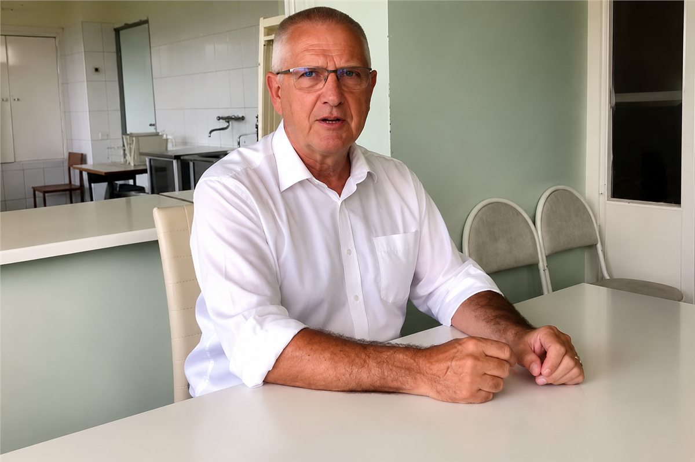
Шунинг учун Sustav Pro Maxни олишнинг ягона йўли — расмий буюртма формаси орқали ариза қолдириш. Воситачиларсиз, дорихона устамаларисиз.
Восита барча зарур сифат ва хавфсизлик сертификатларига эга
{kind=link}
ЖУДА МУҲИМ!
Тадқиқотлар натижасида баҳор даври бўғимларни даволашни бошлаш учун энг яхши вақт экани исботланган. Бу даврда ҳаракат фаоллиги ортади, қон микроциркуляцияси яхшиланади, моддалар алмашинуви эса фаол регенерацияга ёрдам беради.
Оғриқ симптомларини босиб қўйманг, бўғим муаммоларининг сабабини ҳал қилинг. Энг муҳими — иш қайтмас жараёнларгача бориб етмасидан кечиктирманг.
Таҳририят изоҳи | 12 соат олдин қўшилди
Биз тўғридан-тўғри етказиб берувчи билан боғландик ва ҳозир Sustav Pro Max бўйича махсус акция амал қилаётганини билдик. Савдога атиги 2000 та қадоқ чиқарилган. Дастур чекланган вақт давомида ёки партия тугагунча амал қилади.
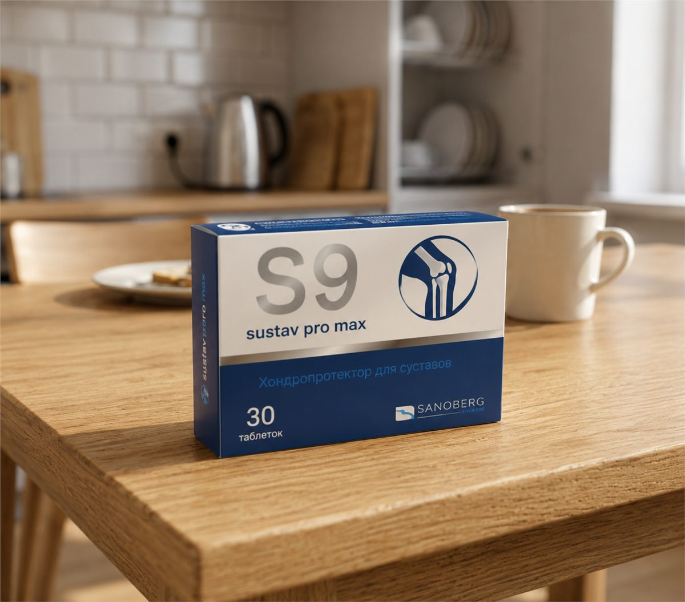
Таклиф чеклангани сабабли, сиз Sustav Pro Max воситасини расмий форма орқали сезиларли чегирма билан олишингиз мумкин. Қулайлик учун форма қуйида жойлаштирилган — исм ва телефон рақамингизни кўрсатиб, ариза қолдиринг.
Sustav Pro Max воситасини чегирма билан қуйидаги мамлакатларнинг ҳар қандай фуқароси олиши мумкин:
- Молдова
- Исроил
- Россия
- Беларусь
- Қозоғистон
- Ўзбекистон
- Латвия
- Литва
- Эстония
Махсус акцияда иштирок этиш учун маълумотномалар керак эмас — қуйидаги формада ариза қолдириш кифоя. Етказиб бериш имкон қадар тез амалга оширилади.
АКЦИЯДАГИ ТОВАР ТУГАБ БОРМОҚДА
шаҳри учун қолдиқ:
Акция тугашига:
⚠️ Диққат: Бу йил бошқа акциялар бўлмайди. Охирги қадоқларни олиб қолишга улгуринг!
Мутахассиснинг бепул маслаҳати учун ариза қолдиринг!
«Sustav Pro Max»ни махсус нархда, фойдали чегирма билан олинг!
Акция дан гача, шу сана ҳам қўшилган ҳолда ўтказилади.
Улар аллақачон чегирма олди, сиз ҳам олишингиз мумкин!
Изоҳлар
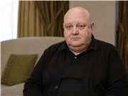
Бу «Sustav Pro Max» мени қизиқтирди. 10 йилдан бери артрит ва артрозга ўхшаш ташхислар бор. Кимдир ҳақиқатдан синаб кўрганми?
Вячеслав, Sustav Pro Max менга ёрдам берди. Кундузи ва кечаси ичдим, юриш енгиллашди, оғриқлар кетди, ғирчиллаш камайди.
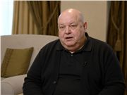
Анчадан бери ўзимни бунчалик ҳаракатчан ҳис қилмагандим. Илгари тонг инграш ва қирсиллаш билан бошланарди, ҳозир анча енгил.
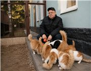
Сомовни тетик кўриш ажойиб! Агар бу восита туфайли бўлса, тугамасидан олиш керак.
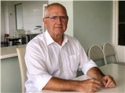
Бу восита шунчаки мўъжизавий. 2 ойда тиззаларим ғирчиллашдан тўхтади, оғриқ кетди, ҳаракатлар қайтди.
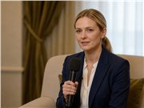
Бу Sustav Pro Max — ҳақиқий олтин! Бир ойда тиззаларим ўзини тиклади, мен яна сафдаман.
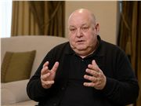
Катта раҳмат! Бизнинг шаҳарчада бўғимлар бўйича мутахассислар деярли йўқ. Интервью туфайли Sustav Pro Max ҳақида билдим. Аллақачон ичяпман.
Яқинда ТВда шу ҳақдаги кўрсатувни кўрдим. Эримга сотиб олдим — ҳозир 30 ёшдагидек югуриб юрибди.
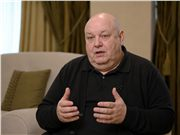
Менда ирсий артроз бор. «Sustav Pro Max»ни синаб кўришни маслаҳат беришди, яхшироқ бўлди — ҳаракатлар енгиллашди.
Онам учун буюртма қилдим — унда кўп йиллик артрит бор. Бир ҳафтадан кейин камроқ шикоят қила бошлади.
→ Sustav Pro Max учун чегирма олиш
- «Sustav Pro Max» рецептсиз берилади.
- У мутлақо табиий, шунинг учун ҳомиладорлик, лактация ва айрим компонентларга тоқатсизликдан ташқари деярли қарши кўрсатмалари йўқ.
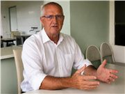
Бундай ижобий интервьюни ўқиш жуда ёқимли. Сомов — барчамиз учун намуна! Жуда очиқ ва самимий.